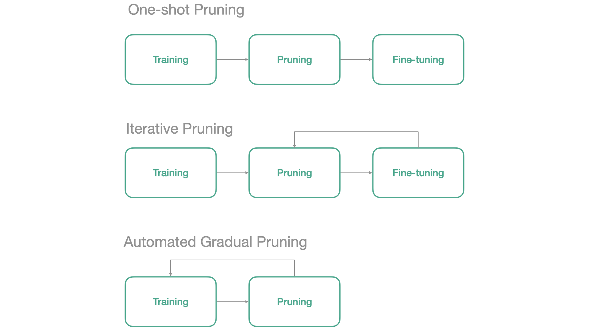
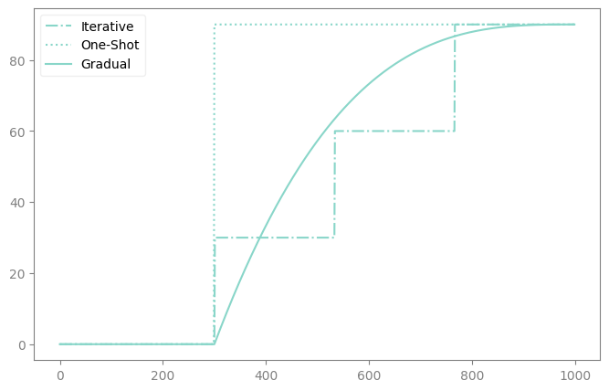

path = untar_data(URLs.PETS)
files = get_image_files(path/"images")
def label_func(f): return f[0].isupper()
device = 'cuda:0' if torch.cuda.is_available() else 'cpu'
dls = ImageDataLoaders.from_name_func(path, files, label_func, item_tfms=Resize(64), device=device)Schedules
Make your neural network sparse with fastai
Neural Network Pruning usually follows one of the following three schedules:

In fasterai, all those 3 schedules can be applied from the same callback. We’ll cover each below
A schedule is a Schedule object, built from a shape function and a few bounds:
sched_func: the shape, i.e. how progress evolves along the training (sched_oneshot,sched_iterative,sched_agp,sched_onecycle,sched_dsd, or your own).start_pct/end_pct: when the schedule starts and stops, as a fraction of the training.start_val/end_val: the progress values it interpolates between, normally 0 and 1.
Schedule.progress(pct_train) returns a number between 0 and 1, and SparsifyCallback multiplies its sparsity target by it. fasterai ships one_shot, iterative, agp, one_cycle, cos, lin and dsd ready to use.
The task is binary (cat/dog). Every accuracy below is read against this split’s size and majority-class rate.
def accuracy_report(learn, z=1.96):
"Validation accuracy as k/n, with its Wilson 95% interval"
n = len(learn.dls.valid_ds); k = round(learn.validate()[1]*n); p, d = k/n, 1 + z**2/n
c, h = (p + z**2/(2*n))/d, z*(p*(1-p)/n + z**2/(4*n**2))**0.5/d
print(f'{k}/{n} = {p:.2%}, Wilson 95% [{c-h:.2%}, {c+h:.2%}]')
return k
labels = [label_func(f.name) for f in dls.valid_ds.items]
print(f'validation set: n={len(labels)}, majority class {max(sum(labels), len(labels)-sum(labels))/len(labels):.2%}')validation set: n=1478, majority class 67.25%We will first train a network without any pruning, which will serve as a baseline.
learn = vision_learner(dls, resnet18, metrics=accuracy)
learn.unfreeze()
learn.fit(10)| epoch | train_loss | valid_loss | accuracy | time |
|---|---|---|---|---|
| 0 | 0.578727 | 0.416473 | 0.824763 | 00:04 |
| 1 | 0.358983 | 0.345918 | 0.853857 | 00:04 |
| 2 | 0.273858 | 0.429159 | 0.843031 | 00:04 |
| 3 | 0.213164 | 0.279110 | 0.894452 | 00:03 |
| 4 | 0.195415 | 0.240654 | 0.908660 | 00:04 |
| 5 | 0.157411 | 0.388180 | 0.852503 | 00:04 |
| 6 | 0.186603 | 0.283973 | 0.893775 | 00:04 |
| 7 | 0.150042 | 0.201018 | 0.920839 | 00:04 |
| 8 | 0.138876 | 0.290358 | 0.887010 | 00:04 |
| 9 | 0.117945 | 0.253690 | 0.911367 | 00:04 |
accuracy_report(learn);1347/1478 = 91.14%, Wilson 95% [89.58%, 92.48%]The reference run, trained with the same fit(10) call as the sparse runs below. accuracy_report prints each run as k/n with its Wilson 95% interval; every one is a single run on the split summarised above.
One-Shot Pruning
One-Shot Pruning trains the network, removes weights in a single step, then fine-tunes what is left.
The one_shot schedule carries start_pct=0.5: nothing is removed during the first half of the training, which stands in for that pre-training step.
sp_cb=SparsifyCallback(sparsity=0.9, granularity='weight', context='local', criteria=large_final, schedule=one_shot)We train for 10 epochs, and the sparsity is applied in one go at mid-training, as one_shot prescribes:
learn.fit(10, cbs=sp_cb)Sparsifying weight until a sparsity of 90.00%
Saving Weights at epoch 0| epoch | train_loss | valid_loss | accuracy | time |
|---|---|---|---|---|
| 0 | 0.620468 | 0.553143 | 0.760487 | 00:04 |
| 1 | 0.371451 | 0.300411 | 0.868065 | 00:04 |
| 2 | 0.288212 | 0.281240 | 0.889039 | 00:04 |
| 3 | 0.257893 | 0.339607 | 0.869418 | 00:04 |
| 4 | 0.210957 | 0.894192 | 0.810555 | 00:04 |
| 5 | 0.251681 | 0.269935 | 0.884980 | 00:04 |
| 6 | 0.187938 | 0.253546 | 0.895805 | 00:04 |
| 7 | 0.135439 | 0.275257 | 0.905277 | 00:05 |
| 8 | 0.108500 | 0.257686 | 0.897158 | 00:04 |
| 9 | 0.090878 | 0.270334 | 0.910690 | 00:04 |
Sparsity at the end of epoch 0: 0.00%
Sparsity at the end of epoch 1: 0.00%
Sparsity at the end of epoch 2: 0.00%
Sparsity at the end of epoch 3: 0.00%
Sparsity at the end of epoch 4: 90.00%
Sparsity at the end of epoch 5: 90.00%
Sparsity at the end of epoch 6: 90.00%
Sparsity at the end of epoch 7: 90.00%
Sparsity at the end of epoch 8: 90.00%
Sparsity at the end of epoch 9: 90.00%
Final Sparsity: 90.00%
Sparsity Report:
--------------------------------------------------------------------------------
Layer Type Params Zeros Sparsity
--------------------------------------------------------------------------------
0.0 Conv2d 9,408 8,466 89.99%
0.4.0.conv1 Conv2d 36,864 33,176 90.00%
0.4.0.conv2 Conv2d 36,864 33,176 90.00%
0.4.1.conv1 Conv2d 36,864 33,176 90.00%
0.4.1.conv2 Conv2d 36,864 33,176 90.00%
0.5.0.conv1 Conv2d 73,728 66,354 90.00%
0.5.0.conv2 Conv2d 147,456 132,709 90.00%
0.5.0.downsample.0 Conv2d 8,192 7,371 89.98%
0.5.1.conv1 Conv2d 147,456 132,709 90.00%
0.5.1.conv2 Conv2d 147,456 132,709 90.00%
0.6.0.conv1 Conv2d 294,912 265,419 90.00%
0.6.0.conv2 Conv2d 589,824 530,840 90.00%
0.6.0.downsample.0 Conv2d 32,768 29,490 90.00%
0.6.1.conv1 Conv2d 589,824 530,840 90.00%
0.6.1.conv2 Conv2d 589,824 530,840 90.00%
0.7.0.conv1 Conv2d 1,179,648 1,061,682 90.00%
0.7.0.conv2 Conv2d 2,359,296 2,123,365 90.00%
0.7.0.downsample.0 Conv2d 131,072 117,963 90.00%
0.7.1.conv1 Conv2d 2,359,296 2,123,365 90.00%
0.7.1.conv2 Conv2d 2,359,296 2,123,365 90.00%
--------------------------------------------------------------------------------
Overall all 11,166,912 10,050,191 90.00%accuracy_report(learn);1346/1478 = 91.07%, Wilson 95% [89.51%, 92.42%]Iterative Pruning
Iterative Pruning alternates removal and fine-tuning: the remove/fine-tune step is repeated until the target sparsity is reached.
learn = vision_learner(dls, resnet18, metrics=accuracy)
learn.unfreeze()You only need to create the Callback with the iterative schedule, which carries start_pct=0.2, i.e. it starts pruning after 20% of the training.
The iterative schedule performs 3 pruning steps by default. To change that, rebuild it around sched_iterative with partial:
iterative = Schedule(partial(sched_iterative, n_steps=5), start_pct=0.2)sp_cb=SparsifyCallback(sparsity=0.9, granularity='weight', context='local', criteria=large_final, schedule=iterative)We train for 10 epochs, and the 3 pruning steps land at 30%, 60% and 90% sparsity:
learn.fit(10, cbs=sp_cb)Sparsifying weight until a sparsity of 90.00%
Saving Weights at epoch 0| epoch | train_loss | valid_loss | accuracy | time |
|---|---|---|---|---|
| 0 | 0.524129 | 0.385407 | 0.847091 | 00:04 |
| 1 | 0.346667 | 0.276739 | 0.884303 | 00:04 |
| 2 | 0.229347 | 0.371639 | 0.870095 | 00:04 |
| 3 | 0.164984 | 0.248563 | 0.891746 | 00:04 |
| 4 | 0.158578 | 0.322972 | 0.893099 | 00:04 |
| 5 | 0.120601 | 0.351889 | 0.891069 | 00:04 |
| 6 | 0.101891 | 0.219812 | 0.915426 | 00:04 |
| 7 | 0.258909 | 0.277741 | 0.882273 | 00:04 |
| 8 | 0.170032 | 0.251452 | 0.891746 | 00:04 |
| 9 | 0.117186 | 0.266463 | 0.899188 | 00:04 |
Sparsity at the end of epoch 0: 0.00%
Sparsity at the end of epoch 1: 0.00%
Sparsity at the end of epoch 2: 30.00%
Sparsity at the end of epoch 3: 30.00%
Sparsity at the end of epoch 4: 60.00%
Sparsity at the end of epoch 5: 60.00%
Sparsity at the end of epoch 6: 60.00%
Sparsity at the end of epoch 7: 90.00%
Sparsity at the end of epoch 8: 90.00%
Sparsity at the end of epoch 9: 90.00%
Final Sparsity: 90.00%
Sparsity Report:
--------------------------------------------------------------------------------
Layer Type Params Zeros Sparsity
--------------------------------------------------------------------------------
0.0 Conv2d 9,408 8,466 89.99%
0.4.0.conv1 Conv2d 36,864 33,176 90.00%
0.4.0.conv2 Conv2d 36,864 33,176 90.00%
0.4.1.conv1 Conv2d 36,864 33,176 90.00%
0.4.1.conv2 Conv2d 36,864 33,176 90.00%
0.5.0.conv1 Conv2d 73,728 66,354 90.00%
0.5.0.conv2 Conv2d 147,456 132,709 90.00%
0.5.0.downsample.0 Conv2d 8,192 7,371 89.98%
0.5.1.conv1 Conv2d 147,456 132,709 90.00%
0.5.1.conv2 Conv2d 147,456 132,709 90.00%
0.6.0.conv1 Conv2d 294,912 265,419 90.00%
0.6.0.conv2 Conv2d 589,824 530,840 90.00%
0.6.0.downsample.0 Conv2d 32,768 29,490 90.00%
0.6.1.conv1 Conv2d 589,824 530,840 90.00%
0.6.1.conv2 Conv2d 589,824 530,840 90.00%
0.7.0.conv1 Conv2d 1,179,648 1,061,682 90.00%
0.7.0.conv2 Conv2d 2,359,296 2,123,365 90.00%
0.7.0.downsample.0 Conv2d 131,072 117,963 90.00%
0.7.1.conv1 Conv2d 2,359,296 2,123,365 90.00%
0.7.1.conv2 Conv2d 2,359,296 2,123,365 90.00%
--------------------------------------------------------------------------------
Overall all 11,166,912 10,050,191 90.00%accuracy_report(learn);1329/1478 = 89.92%, Wilson 95% [88.28%, 91.35%]Gradual Pruning
Here is for example how to implement the Automated Gradual Pruning schedule.
learn = vision_learner(dls, resnet18, metrics=accuracy)
learn.unfreeze()We train for 10 epochs, and the sparsity ramps up gradually from 20% of the training onwards:
learn.fit(10, cbs=sp_cb)Sparsifying weight until a sparsity of 90.00%
Saving Weights at epoch 0| epoch | train_loss | valid_loss | accuracy | time |
|---|---|---|---|---|
| 0 | 0.619244 | 0.399470 | 0.830853 | 00:04 |
| 1 | 0.394009 | 0.403478 | 0.834912 | 00:04 |
| 2 | 0.257530 | 0.298705 | 0.878214 | 00:08 |
| 3 | 0.210437 | 0.288589 | 0.892422 | 00:08 |
| 4 | 0.199809 | 0.235072 | 0.907984 | 00:08 |
| 5 | 0.155557 | 0.259060 | 0.895805 | 00:08 |
| 6 | 0.151647 | 0.260995 | 0.905277 | 00:09 |
| 7 | 0.159459 | 0.232066 | 0.903248 | 00:09 |
| 8 | 0.123188 | 0.342004 | 0.873478 | 00:08 |
| 9 | 0.086236 | 0.258237 | 0.916779 | 00:08 |
Sparsity at the end of epoch 0: 0.00%
Sparsity at the end of epoch 1: 0.00%
Sparsity at the end of epoch 2: 29.71%
Sparsity at the end of epoch 3: 52.03%
Sparsity at the end of epoch 4: 68.03%
Sparsity at the end of epoch 5: 78.75%
Sparsity at the end of epoch 6: 85.25%
Sparsity at the end of epoch 7: 88.59%
Sparsity at the end of epoch 8: 89.82%
Sparsity at the end of epoch 9: 90.00%
Final Sparsity: 90.00%
Sparsity Report:
--------------------------------------------------------------------------------
Layer Type Params Zeros Sparsity
--------------------------------------------------------------------------------
0.0 Conv2d 9,408 8,466 89.99%
0.4.0.conv1 Conv2d 36,864 33,176 90.00%
0.4.0.conv2 Conv2d 36,864 33,176 90.00%
0.4.1.conv1 Conv2d 36,864 33,176 90.00%
0.4.1.conv2 Conv2d 36,864 33,176 90.00%
0.5.0.conv1 Conv2d 73,728 66,354 90.00%
0.5.0.conv2 Conv2d 147,456 132,709 90.00%
0.5.0.downsample.0 Conv2d 8,192 7,371 89.98%
0.5.1.conv1 Conv2d 147,456 132,709 90.00%
0.5.1.conv2 Conv2d 147,456 132,709 90.00%
0.6.0.conv1 Conv2d 294,912 265,419 90.00%
0.6.0.conv2 Conv2d 589,824 530,840 90.00%
0.6.0.downsample.0 Conv2d 32,768 29,490 90.00%
0.6.1.conv1 Conv2d 589,824 530,840 90.00%
0.6.1.conv2 Conv2d 589,824 530,840 90.00%
0.7.0.conv1 Conv2d 1,179,648 1,061,682 90.00%
0.7.0.conv2 Conv2d 2,359,296 2,123,365 90.00%
0.7.0.downsample.0 Conv2d 131,072 117,963 90.00%
0.7.1.conv1 Conv2d 2,359,296 2,123,365 90.00%
0.7.1.conv2 Conv2d 2,359,296 2,123,365 90.00%
--------------------------------------------------------------------------------
Overall all 11,166,912 10,050,191 90.00%accuracy_report(learn);1355/1478 = 91.68%, Wilson 95% [90.16%, 92.98%]The three 90%-sparse runs above and the dense reference were each trained with the same fit(10) call, one run each. The three sparse Wilson intervals overlap one another, so this page does not order the schedules.
Even though they are often considered as different pruning methods, those 3 schedules are captured by the same callback. Here is how the sparsity evolves in each case.
Let’s take an example here. Let’s say that we want to train our network for 3 epochs without pruning and then 7 epochs with pruning.
Then this is what our different pruning schedules will look like:

You can also come up with your own schedule: pass any function of (start, end, pos) to Schedule. Here the sparsity follows a quadratic ramp, starting after 30% of the training.
quadratic = Schedule(lambda start, end, pos: start + (end-start)*pos**2, start_pct=0.3)
learn = vision_learner(dls, resnet18, metrics=accuracy)
learn.unfreeze()
sp_cb = SparsifyCallback(sparsity=0.9, granularity='weight', context='local', criteria=large_final, schedule=quadratic)
learn.fit(10, cbs=sp_cb)Sparsifying weight until a sparsity of 90.00%
Saving Weights at epoch 0| epoch | train_loss | valid_loss | accuracy | time |
|---|---|---|---|---|
| 0 | 0.639670 | 2.110521 | 0.776725 | 00:04 |
| 1 | 0.450323 | 0.332479 | 0.847767 | 00:04 |
| 2 | 0.297276 | 0.312656 | 0.861976 | 00:04 |
| 3 | 0.233949 | 0.445253 | 0.851827 | 00:08 |
| 4 | 0.186292 | 0.262793 | 0.901218 | 00:09 |
| 5 | 0.186781 | 3.016290 | 0.838295 | 00:08 |
| 6 | 0.154581 | 0.348881 | 0.893099 | 00:07 |
| 7 | 0.150676 | 0.246870 | 0.899865 | 00:08 |
| 8 | 0.126707 | 0.260803 | 0.901218 | 00:08 |
| 9 | 0.169793 | 0.397995 | 0.815291 | 00:09 |
Sparsity at the end of epoch 0: 0.00%
Sparsity at the end of epoch 1: 0.00%
Sparsity at the end of epoch 2: 0.00%
Sparsity at the end of epoch 3: 1.84%
Sparsity at the end of epoch 4: 7.35%
Sparsity at the end of epoch 5: 16.53%
Sparsity at the end of epoch 6: 29.39%
Sparsity at the end of epoch 7: 45.92%
Sparsity at the end of epoch 8: 66.12%
Sparsity at the end of epoch 9: 90.00%
Final Sparsity: 90.00%
Sparsity Report:
--------------------------------------------------------------------------------
Layer Type Params Zeros Sparsity
--------------------------------------------------------------------------------
0.0 Conv2d 9,408 8,442 89.73%
0.4.0.conv1 Conv2d 36,864 33,081 89.74%
0.4.0.conv2 Conv2d 36,864 33,081 89.74%
0.4.1.conv1 Conv2d 36,864 33,081 89.74%
0.4.1.conv2 Conv2d 36,864 33,081 89.74%
0.5.0.conv1 Conv2d 73,728 66,164 89.74%
0.5.0.conv2 Conv2d 147,456 132,330 89.74%
0.5.0.downsample.0 Conv2d 8,192 7,350 89.72%
0.5.1.conv1 Conv2d 147,456 132,330 89.74%
0.5.1.conv2 Conv2d 147,456 132,330 89.74%
0.6.0.conv1 Conv2d 294,912 264,661 89.74%
0.6.0.conv2 Conv2d 589,824 529,324 89.74%
0.6.0.downsample.0 Conv2d 32,768 29,405 89.74%
0.6.1.conv1 Conv2d 589,824 529,324 89.74%
0.6.1.conv2 Conv2d 589,824 529,324 89.74%
0.7.0.conv1 Conv2d 1,179,648 1,058,650 89.74%
0.7.0.conv2 Conv2d 2,359,296 2,117,302 89.74%
0.7.0.downsample.0 Conv2d 131,072 117,626 89.74%
0.7.1.conv1 Conv2d 2,359,296 2,117,302 89.74%
0.7.1.conv2 Conv2d 2,359,296 2,117,302 89.74%
--------------------------------------------------------------------------------
Overall all 11,166,912 10,021,490 89.74%accuracy_report(learn);1205/1478 = 81.53%, Wilson 95% [79.47%, 83.42%]The sparsity stays near zero well past the middle of the training, then climbs steeply: the log ends at 90.00% and the report counts 89.74% zeros. This run’s interval does not overlap the three above, but it is a single run of an API demo — the target is only reached in the final epoch, with no fine-tuning after the last step. It is not evidence that the schedule is worse.
Summary
| Schedule | Behavior |
|---|---|
one_shot |
Reaches the target in a single step, at start_pct |
iterative |
Reaches it in N discrete steps |
agp |
Automated Gradual Pruning (cubic ramp) |
one_cycle |
Logistic-shaped single cycle |
cos / lin |
Cosine / linear ramp |
dsd |
Dense-Sparse-Dense (prune, then regrow) |
Schedule(f, start_pct=..., end_pct=...) |
Wraps your own shape function |
See Also
- SparsifyCallback Tutorial - The callback these schedules drive
- Schedules API - Every schedule, plotted
- PruneCallback - The same schedules for structured pruning